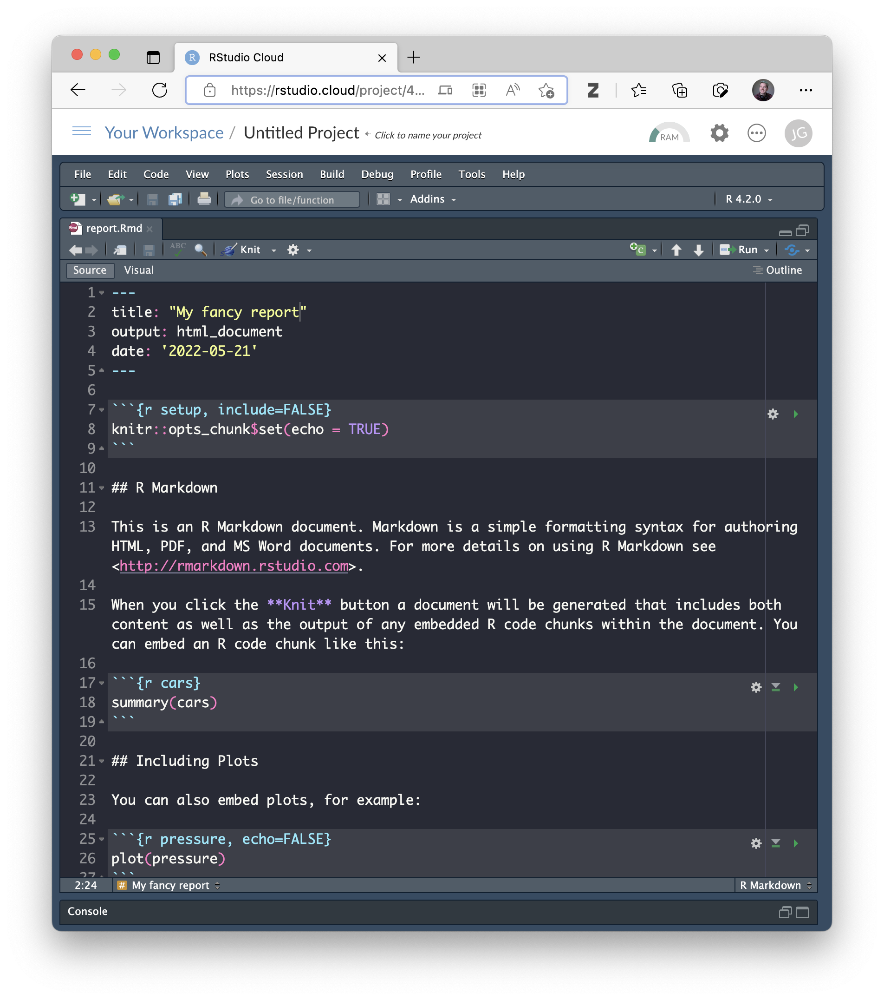
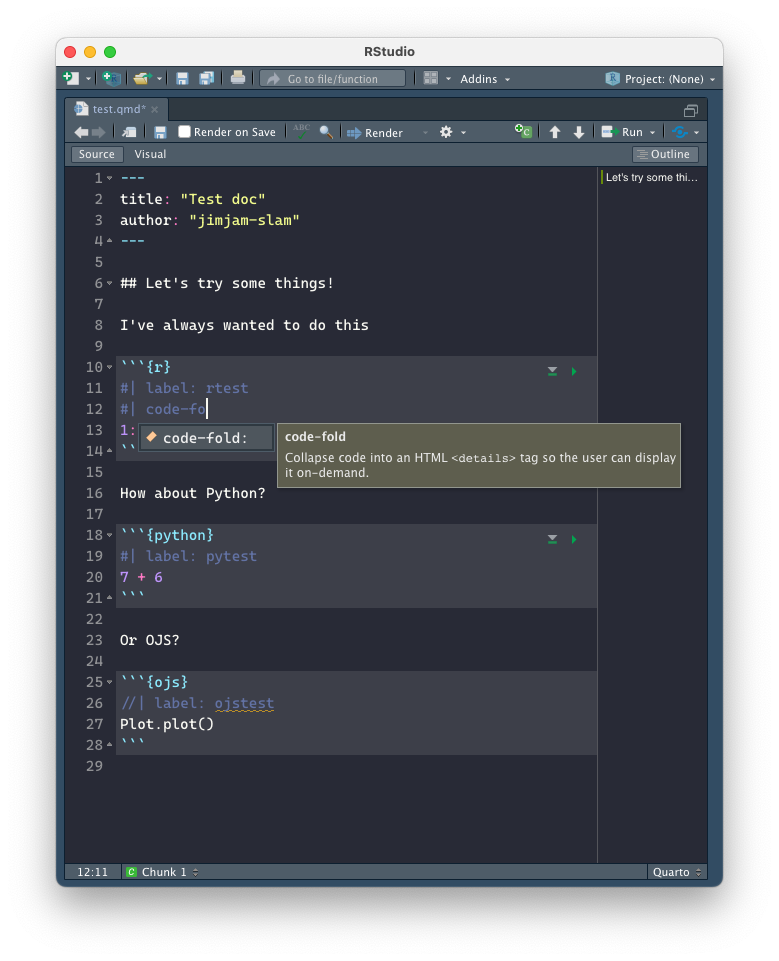

Quarto
Create beautiful documents with R, Python, Julia and Observable
JAMES GOLDIE
Data and Digital Storytelling Lead, 360info
Today
- Hello!
- What are reproducible reports?
- What’s Quarto? Why can anyone use it?
- Web content
Slides
Hi!


Poll: what tools do you use?

Take the survey at https://forms.gle/EdADv8GvDxUrrRmy8
import { liveGoogleSheet } from "@jimjamslam/live-google-sheet";
import { aq, op } from "@uwdata/arquero";
surveyResults = liveGoogleSheet(
"https://docs.google.com/spreadsheets/d/e/" +
"2PACX-1vSVQzZlkSWWR38FRKyFbO2WGYo04ehrJt4TvWkRVOJ7WPRmfQzPAf7AjtyV2EjIY-2DwKW-SfzLoEQw/" +
"pub?gid=1368316628&single=true&output=csv",
30000, 1, 2);
respondentCount = surveyResults.length;// get the counts of people using and interested in tools
countsUsed = aq.from(surveyResults)
.derive({ used: d => op.split(d.responseUsed, ", ") })
.select("used")
.unroll("used")
.groupby("used")
.count()
.derive({ measure: d => "Have used" })
.rename({ used: "tool" })countsWant = aq.from(surveyResults)
.derive({ want: d => op.split(d.responseWant, ", ") })
.select("want")
.unroll("want")
.groupby("want")
.count()
.derive({ measure: d => "Want to learn" })
.rename({ want: "tool" })countsAll = [...countsUsed.objects(), ...countsWant.objects()];
plotUsed = Plot.plot({
marks: [
Plot.barX(countsAll, { y: "tool", x: "count", fill: "tool" }),
Plot.ruleX([respondentCount], { stroke: "#ffffff99" })
],
x : { label: "" },
y : { label: "", tickSize: 0 },
facet: { data: countsAll, x: "measure", label: "" },
marginLeft: 140,
style: {
width: 1350,
height: 500,
fontSize: 12,
}
});What are
reproducible reports?
Notebooks
- Contain:
- Writing
- Code
- Results in the file too

Reproducible reports
Source documents are rendered to produce results


The RMarkdown ecosystem
R packages for just about every kind of document:
xaringan • distill • blogdown • hugodown • bookdown • thesisdown • oxforddown • unswthesisdown • pagedown • flexdashboard • rmdformats • rticles • prettydoc • markdowntemplates • and more…
Quarto:
Literate programming foreveryone
Notebooks or documents

R, Python, Julia
Editors


RStudio visual editor


Spicing up Quarto
with reactivity and Observable JS
Reactivity?
HUH?
Example: footy scores
menu + slider => chart of footy scores
scores = FileAttachment("data/footy-scores.csv").csv({ typed: true })
filteredScores = scores.filter(d => d.team == footyTeam && d.year == year)
Plot.plot({
marks: [
Plot.barY(filteredScores, { x: "game", y: "score", fill: "game" })
],
x: { label: "Game number", labelOffset: 70 },
y: { label: "Score" },
width: 800,
height: 500,
marginLeft: 60,
marginBottom: 90,
marginTop: 60,
style: {
fontSize: 24
}
})Code is usually about doing things
- Write code to create a control
- Write code to check its value all the time
- Write code to do things every time it changes
- Write code to pass updates from one thing to another
This gets old quickly!
😩
Reactive code just updates itself
Describe a control or input
Describe an output that reacts to the control’s changes
… there is no step 3
(the output takes care of itself!)
This is how Shiny and Dash work!
menu + slider => chart of footy scores
So why not use Shiny?
Shiny already works with R Markdown, and it works with Quarto too
But you need R running to react to things as people read the document, not just when you render it
This requires a special web server! (eg. shinyapps.io)
So why not use Shiny?
In media, charts could be viewed 100k+ times in days
(If I’m lucky…)
I can’t afford a Shiny server for that kind of traffic!
Enter Observable JS
Quarto gives us a new kind of code chunk called OJS
It lets us write JavaScript that is naturally reactive
Observable JS: no server required
Quarto +
OJS means
- You can do your data analysis in R, Python or Julia
- You can make visuals that react to users
- You don’t need to worry about the cost if it gets popular
- Learning JavaScript is as easy as possible
R/Python Widgets
“Web content” in R Markdown usually involves a special R or Python package (eg. htmlwidgets)
👍 Convenient
👎 Customising means learning JavaScript and learning how an R package works
Quarto + OJS
It’s just JavaScript!
You get great libraries bundled in to try out JS:
- Observable Plot for making charts
- Observable Inputs for making controls
- Arquero for data analysis (it’s just like
dplyr)
Seriously, just like dplyr, I’m not even kidding
Remember the survey before?
I did that with Observable Plot and Arquero.
Here’s the code I used to tally up survey responses:
Use the whole web
Conclusions
Quarto helps you write documents…
… whether you use R, Python or Julia
… whether you like notebooks or documents
… whether you write in a code editor or a notebook editor
Quarto help you make documents that react to users
… and you might learn JavaScript by accident!
A checklist for trying Quarto
🔴 Download Quarto from quarto.org and have a look at the Guide
🟠 Try to render an existing R Markdown document or Jupyter notebook using Quarto and your favourite editor
🟢 Switch out one of your charts for an Observable Plot chart
🔵 Try switching some dplyr or pandas verbs for some Arquero verbs
🟣 Try adding something to your document by importing an Observable notebook or a JavaScript library
Thanks for listening!
Questions?